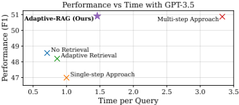
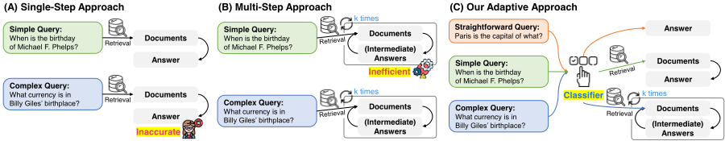
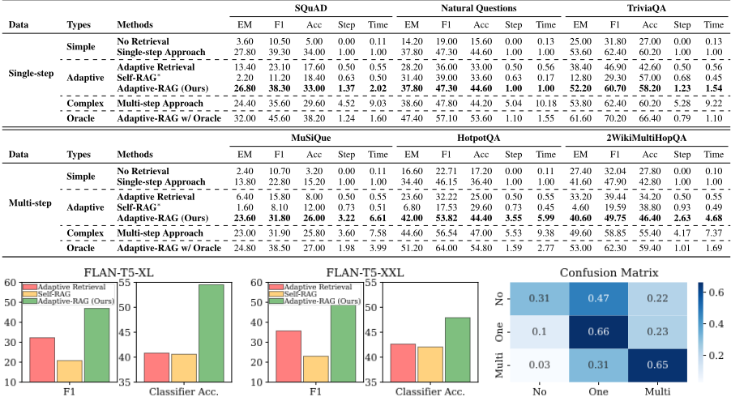
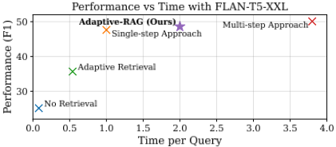

Adaptive-RAG：通过问题复杂度学习自适应调整检索增强大语言模型
论文针对 RAG 系统一刀切策略的问题：多步迭代检索处理简单查询会带来不必要的计算开销，而单步或无检索策略又无法应对需要多文档聚合推理的复杂多跳查询，真实场景中用户查询复杂度差异很大。方法上提出 Adaptive-RAG 框架，训练一个小型 LM（T5-Large）作为复杂度分类器，将查询分为三档（无需检索/单步检索/多步迭代检索）并路由到对应策略，不改动底层 LLM 与检索器；分类器标签全自动构建，一部分来自三种策略的实际预测结果（谁答对标谁、平局优先简单策略），一部分利用数据集固有的单跳/多跳归纳偏置。在 6 个开放域 QA 数据集与 FLAN-T5、GPT-3.5 上验证，整体准确率与效率均优于 Adaptive Retrieval、Self-RAG 等自适应基线，且比全程多步迭代显著省时。对团队而言，这是知识库问答场景中'按查询复杂度动态路由检索策略'的直接参考，可同时优化回答质量与调用成本。
现有检索增强 LLM 采用 one-size-fits-all 策略：多步迭代方法对简单查询造成不必要的计算开销，单步检索或无检索方法又不足以处理需要连接和聚合多个文档的复杂多跳查询；而真实场景中并非所有用户请求都是复杂查询，需要根据查询复杂度动态选择最合适的处理策略。
提出 Adaptive-RAG 框架：先用一个较小的 LM（T5-Large）训练三分类器，预测查询复杂度（'A'=可直接由 LLM(q) 回答、'B'=需单步检索 LLM(q,d)、'C'=需多步迭代检索 LLM(q,d,c)），再据此路由到对应策略，LLM 与 Retriever 本身保持不变、可使用任意 off-the-shelf 模型。分类器训练标签自动收集：优先用三种策略的实际预测结果标注（最简单的无检索策略答对则标 'A'，平局时优先赋予更简单模型），对仍未标注的样本利用数据集归纳偏置补标（单跳数据集标 'B'、多跳数据集标 'C'），用交叉熵损失训练。多步策略采用 IRCoT 式的 Chain-of-Thought 推理与检索交替迭代。
在 6 个开放域 QA 数据集（单跳：SQuAD v1.1、Natural Questions、TriviaQA；多跳：MuSiQue、HotpotQA、2WikiMultiHopQA）上，Adaptive-RAG 在 FLAN-T5-XL (3B)、FLAN-T5-XXL (11B) 与 GPT-3.5 上整体准确率（F1/EM/Acc）优于 Adaptive Retrieval 与 Self-RAG 等自适应基线，同时比全程多步迭代策略在所有模型规模上均显著更高效（每数据集评测 500 样本，检索器统一为 BM25）
分类器混淆矩阵显示：'C (Multi)' 被误判为 'B (One)' 约 31%，'B (One)' 被误判为 'C (Multi)' 约 23%，'A (No)' 被误判为 'B (One)' 约 47%、被误判为 'C (Multi)' 约 22%
使用 Oracle 分类器（分类完全正确）时 Adaptive-RAG 取得最佳性能且比实际分类器版本更高效，说明分类器效果仍有提升空间
分类器规模消融（Table 6）显示不同大小的分类器之间无显著性能差异，可在真实使用中以更小分类器实现资源节约而不牺牲性能
训练数据消融（Table 4）显示同时使用'模型预测结果 silver 数据'与'数据集归纳偏置'两种自动标注策略，优于仅用其中一种；仅用 silver 数据虽分类准确率高但 QA 性能非最优，因其未覆盖预测错误的查询
与已有自适应检索工作的区别：Mallen 等人仅基于查询实体频率做'是否检索'的二元决策，无法处理需要多步推理的复杂查询；Self-RAG 需要训练专门模型；IRCoT 等多步方法对所有查询统一迭代访问 LLM 与检索器。Adaptive-RAG 用独立的小型分类器预先判定查询复杂度，在无检索、单步、多步三种现成策略间路由，可套用任意 off-the-shelf LLM 与检索器，无需改变内部模型架构或参数，且训练标签完全自动收集、无需人工标注。
相关度级别：high
命中能力域：3.1 上下文工程与记忆 | 3.5 评测与可靠使用
理由：团队核心场景包含知识库问答，本文直接命中 3.1 的 RAG/检索增强与上下文组织：其核心是在'检索多少上下文、迭代几轮'之间按查询动态决策。同时论文将每查询耗时、检索-生成步数等效率指标与 F1/EM/Acc 并重评测，并系统分析准确率-效率权衡，直接命中 3.5 的成本与效率优化与评测方法。分类器路由思路对 Agent 的策略/工具选择也有借鉴意义，但论文本身不涉及多智能体协作或提示优化，故不匹配 3.2/3.3/3.4。
建议动作：深入精读并做内部分享
arXiv:2403.14403v2 [cs.CL] 2024年3月28日
Soyeong Jeong 1 Jinheon Baek 2 Sukmin Cho 1 Sung Ju Hwang 1, 2 Jong C. Park 1 *
计算机学院 1 人工智能研究生院 2
韩国科学技术院（KAIST）1, 2
{starsuzi,jinheon.baek,nelllpic,sjhwang82,jongpark}@kaist.ac.kr
检索增强大语言模型（Retrieval-Augmented Large Language Models, LLMs）将来自外部知识库的非参数知识融入 LLMs，已成为在问答（Question-Answering, QA）等多种任务中提升回答准确性的一种颇具前景的方法。然而，尽管已有多种方法用于处理不同复杂度的查询，它们要么在处理简单查询时带来不必要的计算开销，要么无法充分应对复杂的多步查询；而实际上，并非所有用户请求都仅属于简单或复杂两类之一。在本工作中，我们提出了一种新颖的自适应问答框架，该框架能够根据查询复杂度，为（检索增强的）LLMs 动态选择从最简单到最复杂策略中最合适的一种。此外，这一选择过程通过一个分类器来实现，该分类器是一个较小的语言模型（LM），其训练目标是利用自动收集的标签来预测输入查询的复杂度级别，这些标签源自模型的实际预测结果以及数据集中固有的归纳偏置。该方法提供了一种均衡的策略，能够针对不同范围的查询复杂度，在迭代式与单步检索增强 LLMs 以及无检索方法之间无缝适配。我们在一组覆盖多种查询复杂度的开放域问答数据集上验证了我们的模型，结果表明，与包括自适应检索方法在内的相关基线相比，我们的方法提升了问答系统的整体效率与准确性。代码已发布于：https:// github.com/starsuzi/Adaptive-RAG 。
近期的大语言模型（Large Language Models, LLMs）（Brown et al., 2020; OpenAI, 2023; Touvron et al., 2023; Anil et al., 2023）在包括问答（question answering, QA）（Yang et al., 2018; Kwiatkowski et al., 2019）在内的多种任务上展现出了压倒性的性能。然而，由于其知识完全依赖于参数化记忆（parametric memory），它们仍会生成事实性错误的答案（Kasai et al., 2022; Mallen et al., 2023）。与此同时，要记住所有（不断变化的）世界知识可能是不可能的。为解决这一问题，检索增强LLMs（retrieval-augmented LLMs）（Borgeaud et al., 2022; Izacard et al., 2023; Shi et al., 2023）——即通过额外的检索模块将非参数化知识融入LLMs的模型——受到了越来越多的关注。具体而言，这些模型会访问一个知识库（knowledge base），该知识库作为涵盖各学科和领域的庞大信息库，用于检索与给定输入相关的信息，然后将检索到的信息融入LLMs，从而使它们能够保持与世界知识同步的准确性和时效性。
* 通讯作者

检索增强LLMs的一个尤为突出的应用是处理QA任务，其目标是针对用户查询提供正确的答案，尤其是那些高复杂度的查询。早期关于检索增强LLMs的工作主要聚焦于单跳（single-hop）查询（Lazaridou et al., 2022; Ram et al., 2023），此类查询的答案通常可在单个文档中找到；因此，该方法包括基于查询检索一个相关文档，随后将该信息整合到问答模型中以形成回答。然而，与这种单跳问答不同，一些查询需要连接和聚合多个文档，而且这些查询往往无法通过单步的检索与回答过程来解答。一个示例查询是“攻占马拉科夫（Malakoff）的人们是何时来到菲利普斯堡（Philipsburg）所在地区的？”，该问题需要四个推理步骤才能解决。因此，为了有效处理此类复杂查询，近期的研究大多集中于多步、多推理的问答，这需要对LLMs和检索器进行多次迭代访问（Press et al., 2023; Trivedi et al., 2023），但代价是高昂的计算开销。

然而，我们应当重新思考：在真实场景中，用户提出的所有请求都是复杂的吗？事实上，用户可能经常提出简单直接的问题，而只是偶尔提出复杂的问题。具体而言，诸如“巴黎是什么的首都？”这样的查询，相比前述的多步查询，更可能被频繁提出，而且这类较简单的查询或许可以由 LLMs 自身轻松回答，无需访问外部知识。换言之，对于简单查询，多步问答方法可能带来不必要的计算开销，尽管它对复杂查询而言至关重要（见图 2 (A)）。另一方面，用单步检索甚至无检索策略来处理复杂查询则远远不够（图 2 (B)）。这表明需要一种自适应问答系统，能够根据查询复杂度动态调整检索增强 LLMs 的运行策略。虽然近期的一些方法能够基于查询中实体的频率（Mallen et al., 2023）或基于模型为多步问答生成的输出（Trivedi et al., 2023）来实现这一点，但它们仍然次优：前一类方法过于简单，未能考虑多跳查询；而后一类方法则过于复杂，在经过若干轮模块访问之后才终止答案求解步骤。
在本工作中，考虑到真实世界查询的多样化复杂度级别，我们认为以往“一刀切”的方法可能不足以覆盖所有情况。相反，我们提出从一系列（检索增强的）LLMs 中选择最合适的策略，其中每个模型都针对输入查询的特定复杂度量身定制。值得注意的是，该过程中的一个关键步骤是预先定义查询复杂度，这对于确定最适合该查询的模型至关重要。在本工作中，我们通过一个新颖的分类器将这一过程付诸实施，该分类器是一个较小的模型，经过训练用于预测输入查询的复杂度级别（见图 2 (c)）。此外，我们无需人工标注即可自动收集其训练数据集，方法是利用预测结果（即哪些模型能够准确回答哪些查询），并利用现有数据集中固有的偏置（即数据集中的样本要么为单步问答场景而设计，要么为多步问答场景而设计）。所提出的方法可以在面向复杂查询的迭代式 LLM 增强方法、面向较简单查询单步方法，以及面向最直接查询（可由 LLMs 自身回答）的无检索增强方法之间提供一个稳健的折中方案，从而显著提升整体效率与准确性，如图 1 所示。我们将我们的框架称为自适应检索增强生成（Adaptive Retrieval-Augmented Generation, Adaptive-RAG）。
我们在开放域问答（QA）基准测试（benchmark）数据集上对 Adaptive-RAG 进行验证，这些数据集涵盖了从单跳（single-hop）(Rajpurkar et al., 2016; Joshi et al., 2017; Kwiatkowski et al., 2019) 到多跳（multi-hop）(Yang et al., 2018; Ho et al., 2020; Trivedi et al., 2022b) 查询的广泛查询复杂度范围。实验结果表明，与先前的自适应策略相比，我们的方法在多个大语言模型（LLMs）上显著提升了整体准确性与效率，例如 GPT-3.5 (Brown et al., 2020) 和 FLAN-T5 系列 (Chung et al., 2022)。
我们的贡献与发现有三方面：
开放域问答（Open-domain QA） 开放域问答是通过检索与查询相关的文档，并对其进行解读以提供答案，从而准确回答查询的任务（Chen et al., 2017; Zhu et al., 2021），因此通常涉及两个模块：检索器（retriever）（Karpukhin et al., 2020; Xiong et al., 2021）和阅读器（reader）（Yang et al., 2019; Izacard and Grave, 2021; Jeong et al., 2023）。随着凭借数十亿级参数而具备卓越推理能力的大语言模型（LLMs）的出现（Wei et al., 2022a），LLMs 与检索器之间的协同作用带来了显著的进展（Lazaridou et al., 2022; Ram et al., 2023）。具体而言，这种集成已被证明能够通过增强阅读器的推理能力来缓解 LLMs 的幻觉问题，并利用检索到的外部文档，从而提升开放域问答的性能（Cho et al., 2023）。然而，尽管单跳检索增强 LLMs 取得了这些进展，某些查询的复杂度仍需要更复杂的策略。
多跳问答（Multi-hop QA） 多跳问答是传统开放域问答的扩展，它额外要求系统全面地收集来自多个文档的信息并将其置于上下文中（通常以迭代方式进行），以回答更复杂的查询（Trivedi et al., 2022a; Yang et al., 2018）。在多跳问答领域，通常采用迭代访问 LLMs 与检索模块的方法。具体而言，Khattab et al. (2022)、Press et al. (2023)、Pereira et al. (2023) 和 Khot et al. (2023) 提出首先将多跳查询分解为更简单的单跳查询，反复访问 LLMs 和检索器以求解这些子查询，然后合并它们的解以形成完整答案。与这种基于分解的方法不同，其他近期研究，如 Yao et al. (2023) 和 Trivedi et al. (2023)，探索了将思维链（Chain-of-Thought, CoT）推理（Wei et al., 2022b）——一种生成逻辑思维序列的方法——与文档检索交替进行，并反复应用这一过程，直到推理链生成答案。此外，Jiang et al. (2023) 提出了一种方法：当生成句子中的词元置信度较低时，反复检索新文档。然而，上述方法忽略了一个事实：在现实场景中，查询具有多种多样的复杂度。因此，对每个查询都迭代访问 LLMs 和检索器将在很大程度上是低效的，因为有些查询可能只需单次检索步骤、甚至仅凭 LLM 本身就足以解决。
自适应检索 为了处理复杂度各异的查询，自适应检索策略旨在根据每个查询的复杂度动态决定是否检索文档。沿着这一思路，Mallen et al. (2023) 提出根据查询中实体的频率来判断查询的复杂度级别，并建议仅当该频率低于某个阈值时才使用检索模块。然而，这种方法仅关注“是否检索”这一二元决策，对于需要多个推理步骤的更复杂查询而言可能并不足够。此外，Qi et al. (2021) 提出了一种方法，该方法重复执行一组固定的操作（检索、阅读和重排序），直到为给定查询得出答案，其建立在传统的类BERT语言模型（LMs）之上。然而，与我们的 Adaptive-RAG 不同——后者预先确定查询复杂度，并据此调整任何现成大语言模型（LLMs）的运行行为——该方法对每个查询都应用相同的固定操作，而不考虑其复杂度，同时还需要对语言模型进行额外的专门训练。与我们的工作同期，Asai et al. (2024) 提出训练一个复杂的模型来动态地执行检索、评判和文本生成。尽管如此，我们认为上述所有依赖单一模型的自适应检索方法在处理各种不同复杂度的查询时可能都并非最优，因为它们对所有输入查询而言往往要么过于简单、要么过于复杂，这就需要一种能够根据查询复杂度选择最适合的检索增强大语言模型策略的新方法。
在本节中，我们描述了使检索增强大语言模型（LLM）实现自适应的方法，即通过预先确定查询复杂度，然后为检索增强大语言模型选择最合适的策略。
在这种多步骤方法中，LLM 与 Retriever 进行多轮交互，逐步完善其对 q 的理解，直至根据在这些多个步骤中积累的发现形成最终答案。具体而言，该过程从初始查询 q 开始，在每一个检索步骤 i 中，都会从 D 中检索新的文档 d_i，然后将其并入 LLM 的输入，如下所示：¯a_i = LLM(q, d_i, c_i)，其中附加上下文 c_i 可以由先前的文档和结果组成（d_1, d_2, ..., d_{i-1}, ¯a_1, ¯a_2, ..., ¯a_{i-1}），且 d_i = Retriever(q, c_i; D)¹。我们想指出，这种迭代式的多步骤过程使 LLM 能够构建一个更加全面、广泛的基础，从而有效地求解查询，尤其擅长处理复杂的多跳（multi-hop）查询，即答案依赖于相互关联的信息片段的查询。然而，需要注意的是，由于需要反复访问 Retriever 和 LLM，这种多步骤方法可能非常消耗资源，会带来高昂的计算成本。
我们现在介绍我们所提出的自适应检索增强大语言模型（LLM），其构建于上一节所述的三种不同策略之上，旨在根据查询的复杂度选择最合适的策略。
适配检索增强大语言模型 需要注意的是，在现实场景中，来自用户的 q 并非都具有相同的复杂度，这就需要为每个查询量身定制处理策略。换言之，采用最基本的不基于检索的方法 LLM(q) 来应对复杂的查询 q 同样会是无效的（图2，A）；反之，对简单的 q 使用更为精细的多步骤方法 LLM(q, d, c) 则会是低效的（图2，B）。因此，我们的自适应框架旨在动态调整检索增强大语言模型的查询处理策略，其实现方式是在尝试求解之前先确定每个查询的复杂度。值得注意的是，该框架能够提供一个稳健的中间地带，涵盖一系列解决方案：从针对最简单直接查询的最简方法，到针对中等复杂度查询的单步方法，乃至针对复杂查询的最全面、最严谨的方法。此外，由于 LLM 和 Retriever 的运算过程不随其输入变化、始终保持一致，我们的方法可以在不同复杂度的查询之间无缝地来回切换，而在适配过程中无需更改内部模型架构或参数。
1 值得注意的是，在不同的多步骤检索增强大语言模型方法中，LLM 和 Retriever 的具体实现各不相同（Trivedi et al., 2023; Press et al., 2023; Yao et al., 2023）；因此，上下文 c_i 可能完全不包含、部分包含或全部包含先前的文档和答案。
查询复杂度评估 为了使我们的自适应检索增强大语言模型框架得以实际运作，我们需要确定查询的复杂度；为实现这一点，我们提出建模一个复杂度分类器，其目标是返回给定查询的适当复杂度级别。具体而言，给定查询 q，我们的分类器可以形式化表示为：o = Classifier(q)，其中 Classifier 是一个较小的语言模型，经过训练可将查询分类到三种不同复杂度级别之一，o 为其对应的类别标签。在我们的分类器设计中，共有三个类别标签：'A'、'B' 和 'C'，其中 'A' 表示 q 较为简单直接，可由 LLM(q) 自身回答；'B' 表示 q 具有中等复杂度，至少需要单步方法 LLM(q, d)；'C' 表示 q 较为复杂，需要最全面的求解方法 LLM(q, d, c)²。
训练策略 剩下的步骤是训练作为 Classifier 的那个较小的语言模型，使其能够针对给定查询 q 准确预测其复杂度 o。然而，目前尚无包含查询-复杂度对的标注数据集可用。因此，我们提出采用两种特定策略来自动构建训练数据集。
具体而言，我们首先基于三种不同的检索增强 LLM 策略所得的结果来标注查询复杂度，以便根据查询的需求来确定其标签。例如，如果最简单的非检索方法能够正确生成答案，则其对应查询的标签被分配为 'A'。此外，为了在为查询提供标签时打破不同模型之间的平局，我们赋予更简单的模型更高的优先级。换言之，如果单步方法和多步方法都产生了相同的正确答案，而非检索方法失败了，我们就为其对应的查询分配标签 'B'。
2 我们考虑三个级别的查询复杂度，并将对更细粒度复杂度的探索留作未来工作。
然而，这种标注策略存在一个局限，即并非所有查询都能被分配到标签，因为三种检索增强方法可能全部无法生成正确答案。另一方面，考虑到基准测试数据集的构建方式，这些数据集对于其查询而言最适合采用哪种检索增强 LLM 策略，可能已经蕴含了有意义的归纳偏置（例如，需要顺序推理的 QA 数据集通常需要多步方法；而那些带有已标注单文档的数据集，其查询理想情况下可以通过单步方法得到回答）。因此，对于在第一轮标注步骤之后仍未获得标签的查询，我们将单跳（single-hop）数据集中的查询分配为 'B'，将多跳数据集中的查询分配为 'C'。最后，我们使用交叉熵损失，在这些自动收集的查询-复杂度对 3 上训练 Classifier。随后，在推理阶段，我们可以通过将查询前向传入 Classifier 来确定该查询的复杂度，即 {'A', 'B', 'C'} 之一：o = Classifier(q)。
在本节中，我们将介绍数据集、模型、指标和实现细节。我们在附录 A 中提供了更多细节。
为了模拟不同查询具有不同复杂度的真实场景，我们在统一的实验设置中同时使用单跳（single-hop）和多跳（multi-hop）问答（QA）数据集。
单跳问答（Single-hop QA） 对于较简单的查询，我们使用三个基准测试（benchmark）单跳 QA 数据集，它们由查询及其包含答案的相关文档组成，即 1) SQuAD v1.1 (Rajpurkar et al., 2016)、2) Natural Questions (Kwiatkowski et al., 2019) 和 3) TriviaQA (Joshi et al., 2017)。
3 由于我们自动分配分类器标签，标注中可能存在错误，并且可能存在更先进的自动分配标签策略，我们将这些留作未来工作。
| Types | Methods | FLAN-T5-XL (3B).EM | FLAN-T5-XL (3B).F1 | FLAN-T5-XL (3B).Acc | FLAN-T5-XL (3B).Step | FLAN-T5-XL (3B).Time | FLAN-T5-XXL (11B).EM | FLAN-T5-XXL (11B).F1 | FLAN-T5-XXL (11B).Acc | FLAN-T5-XXL (11B).Step | FLAN-T5-XXL (11B).Time | GPT-3.5 (Turbo).EM | GPT-3.5 (Turbo).F1 | GPT-3.5 (Turbo).Acc | GPT-3.5 (Turbo).Step | GPT-3.5 (Turbo).Time |
|---|---|---|---|---|---|---|---|---|---|---|---|---|---|---|---|---|
| Simple | No Retrieval | 14.87 | 21.12 | 15.97 | 0 | 0.11 | 17.83 | 25.14 | 19.33 | 0 | 0.08 | 35.77 | 48.56 | 44.27 | 0 | 0.71 |
| Single-step Approach | 34.83 | 44.31 | 38.87 | 1 | 1 | 37.87 | 47.63 | 41.9 | 1 | 1 | 34.73 | 46.99 | 45.27 | 1 | 1 | |
| Adaptive Retrieval | 23.87 | 32.24 | 26.73 | 0.5 | 0.56 | 26.93 | 35.67 | 29.73 | 0.5 | 0.54 | 35.9 | 48.2 | 45.3 | 0.5 | 0.86 | |
| Adaptive | Self-RAG ∗ | 9.9 | 20.79 | 31.57 | 0.72 | 0.43 | 10.87 | 22.98 | 34.13 | 0.74 | 0.23 | 10.87 | 22.98 | 34.13 | 0.74 | 1.5 |
| Adaptive-RAG (Ours) | 37.17 | 46.94 | 42.1 | 2.17 | 3.6 | 38.9 | 48.62 | 43.77 | 1.35 | 2 | 37.97 | 50.91 | 48.97 | 1.03 | 1.46 | |
| Complex | Multi-step Approach | 39 | 48.85 | 43.7 | 4.69 | 8.81 | 40.13 | 50.09 | 45.2 | 2.13 | 3.8 | 38.13 | 50.87 | 49.7 | 2.81 | 3.33 |
| Oracle | Adaptive-RAG w/ Oracle | 45 | 56.28 | 49.9 | 1.28 | 2.11 | 47.17 | 58.6 | 52.2 | 0.84 | 1.1 | 47.7 | 62.8 | 58.57 | 0.5 | 1.03 |
| Types | Methods | FLAN-T5-XL (3B).EM | FLAN-T5-XL (3B).F1 | FLAN-T5-XL (3B).Acc | FLAN-T5-XL (3B).Step | FLAN-T5-XL (3B).Time | FLAN-T5-XXL (11B).EM | FLAN-T5-XXL (11B).F1 | FLAN-T5-XXL (11B).Acc | FLAN-T5-XXL (11B).Step | FLAN-T5-XXL (11B).Time | GPT-3.5 (Turbo).EM | GPT-3.5 (Turbo).F1 | GPT-3.5 (Turbo).Acc | GPT-3.5 (Turbo).Step | GPT-3.5 (Turbo).Time |
多跳问答（Multi-hop QA） 为了考虑更复杂的查询场景，我们使用三个基准测试多跳 QA 数据集，它们需要对多个文档进行顺序推理，即 1) MuSiQue (Trivedi et al., 2022a)、2) HotpotQA (Yang et al., 2018) 和 3) 2WikiMultiHopQA (Ho et al., 2020)。
在评估自适应模型时，必须同时考虑任务性能与效率以及二者之间的权衡。因此，我们使用五个指标来报告结果，其中三个衡量有效性，另外两个衡量效率。具体而言，在有效性方面，我们遵循标准评估协议（Mallen et al., 2023; Baek et al., 2023; Asai et al., 2024），采用 F1、EM 和准确率（Accuracy, Acc），其中 F1 衡量预测答案与真实答案之间重叠词的数量，EM 衡量二者是否完全相同，Acc 衡量预测答案是否包含真实答案。在效率方面，我们衡量检索与生成步骤的数量，以及相对于单步方法而言回答每个查询的平均耗时。
为了进行公平比较，并遵循 Mallen et al. (2023) 与 Trivedi et al. (2023) 的做法，我们在所有不同的模型上均使用相同的检索器，即一种称为 BM25（Robertson et al., 1994）的基于词项的稀疏检索模型。对于外部文档语料库，我们根据数据集类型使用不同的来源：单跳数据集使用由 Karpukhin et al. (2020) 预处理的 Wikipedia 语料库，多跳数据集使用由 Trivedi et al. (2023) 预处理的语料库。在用于生成答案的大语言模型（LLM）方面，我们使用 FLAN-T5 系列模型（Chung et al., 2022），包括具有 3B 参数的 XL 版本和具有 11B 参数的 XXL 版本，以及 GPT-3.5 模型（gpt-3.5-turbo-instruct）。在检索增强 LLM 的设计方面，我们遵循 Trivedi et al. (2023) 的实现细节，其中包括输入提示、指令以及用于评估的测试样本数量（例如每个数据集 500 个样本）。在我们的 Adaptive-RAG 中，对于查询复杂度分类器，我们使用并训练 T5-Large 模型（Raffel et al., 2020）。具体而言，该分类器在最多 100 次训练迭代内，根据验证集选取表现最佳的 epoch 进行训练，学习率为 3e-
| Data | Types | Methods | SQuAD.EM | SQuAD.F1 | SQuAD.Acc | SQuAD.Step | SQuAD.Time | Natural Questions.EM | Natural Questions.F1 | Natural Questions.Acc | Natural Questions.Step | Natural Questions.Time | TriviaQA.EM | TriviaQA.F1 | TriviaQA.Acc | TriviaQA.Step | TriviaQA.Time |
|---|---|---|---|---|---|---|---|---|---|---|---|---|---|---|---|---|---|
| Single-step | Simple | No Retrieval Single-step Approach | 3.60 27.80 | 10.50 39.30 | 5.00 34.00 | 0.00 1.00 | 0.11 1.00 | 14.20 37.80 | 19.00 47.30 | 15.60 44.60 | 0.00 1.00 | 0.13 1.00 | 25.00 53.60 | 31.80 62.40 | 27.00 60.20 | 0.00 1.00 | 0.13 1.00 |
| Adaptive Retrieval | 13.40 | 23.10 | 17.60 | 0.50 | 0.55 | 28.20 | 36.00 | 33.00 | 0.50 | 0.56 | 38.40 | 46.90 | 42.60 | 0.50 | 0.56 | ||
| Adaptive | Self-RAG ∗ | 2.20 | 11.20 | 18.40 | 0.63 | 0.50 | 31.40 | 39.00 | 33.60 | 0.63 | 0.17 | 12.80 | 29.30 | 57.00 | 0.68 | 0.45 | |
| Adaptive-RAG (Ours) | 26.80 | 38.30 | 33.00 | 1.37 | 2.02 | 37.80 | 47.30 | 44.60 | 1.00 | 1.00 | 52.20 | 60.70 | 58.20 | 1.23 | 1.54 | ||
| Complex | Multi-step Approach | 24.40 | 35.60 | 29.60 | 4.52 | 9.03 | 38.60 | 47.80 | 44.20 | 5.04 | 10.18 | 53.80 | 62.40 | 60.20 | 5.28 | 9.22 | |
| Oracle | Adaptive-RAG w/ Oracle | 32.00 | 45.60 | 38.20 | 1.24 | 1.60 | 47.40 | 57.10 | 53.60 | 1.10 | 1.55 | 61.60 | 70.20 | 66.40 | 0.79 | 1.10 |
| Data | Types | Methods | SQuAD.EM | SQuAD.F1 | SQuAD.Acc | SQuAD.Step | SQuAD.Time | Natural Questions.EM | Natural Questions.F1 | Natural Questions.Acc | Natural Questions.Step | Natural Questions.Time | TriviaQA.EM | TriviaQA.F1 | TriviaQA.Acc | TriviaQA.Step | TriviaQA.Time |

5，并使用 AdamW（Loshchilov and Hutter, 2019）作为优化器。关于其训练数据，我们基于各方法的归纳偏置，从 6 个数据集中采样并标注了 400 个查询（单步方法对应单跳，多步方法对应多跳）。此外，我们还使用了三种不同策略在从每个数据集采样的 400 个查询上的预测结果。请注意，用于分类器训练的查询与用于问答（QA）测试的查询并不重叠。
在本节中，我们展示整体实验结果，并对我们的方法进行深入分析。
主要结果 首先，表 1 展示了我们在所有所考虑数据集上取平均的主要结果，这些结果证实了我们的假设：简单的检索增强策略不如复杂策略有效，而复杂策略的成本又显著高于简单策略。此外，我们在表 2 中报告了使用 FLAN-T5-XL 在各个单跳和多跳数据集上更细粒度的结果（附录的表 7 和表 8 中还给出了使用不同 LLM 的更多结果），这些结果与表 1 中观察到的结果一致。
然而，在现实场景中，并非所有用户提出的查询都具有相同的复杂度，这凸显了对自适应策略需求的重要性。请注意，在各自适应策略中，我们的 Adaptive-RAG 相比竞争方法展现出显著更优的效果（表 1）。这表明，仅仅关注是否进行检索这一决策是次优的。此外，如表 2 所示，这类简单的自适应策略尤其不足以处理多跳数据集中的复杂查询，因为这些查询需要对多个文档上的信息进行聚合与推理。与此同时，我们的方法通过为复杂查询进一步引入迭代模块，能够采用更细粒度的查询处理策略。而且，在现实环境中，我们不仅需要考虑有效性，还需要考虑效率。如表 1 所示，与复杂的多步策略相比，我们提出的自适应策略在所有模型规模上都显著更加高效。在大语言模型（LLM）时代，这一点具有重要意义，因为访问 LLM 的成本是实际应用和可扩展性的关键因素。最后，为了考察 Adaptive-RAG 的性能上限，我们报告了其在分类性能完美的 oracle 分类器下的表现。如表 1 和表 2 所示，我们观察到它取得了最佳性能，同时比不使用 oracle 分类器的 Adaptive-RAG 高效得多。这些结果验证了我们所提出的基于查询复杂度自适应调整检索增强 LLM 策略这一方案的有效性与重要性，并进一步指出了开发更优分类器以实现最佳性能的方向。
| Labels | Time/Query (Sec.) | Percentage (%) |
|---|---|---|
| No (A) | 0.35 | 8.6 |
| One (B) | 3.08 | 53.33 |
| Multi (C) | 27.18 | 38.07 |
| Labels | Time/Query (Sec.) | Percentage (%) |
分类器性能 为了理解所提出的分类器是如何工作的，我们分析了其在不同复杂度标签上的性能。如图 3（左图和中图）所示，我们的 Adaptive-RAG 的分类准确率优于其他自适应检索基线方法，从而带来了整体问答（QA）性能的提升。换言之，这一结果表明，我们的 Adaptive-RAG 能够更准确地划分具有不同粒度的复杂度级别，包括不执行检索、仅执行一次检索以及执行多次检索。除了图 3（左图和中图）中我们的分类器在这三个标签上取平均的真正例（true positive）性能之外，我们还在图 3（右图）中进一步报告了其混淆矩阵。我们注意到，混淆矩阵揭示了一些值得关注的趋势：'C (Multi)' 有时会被误分类为 'B (One)'（约 31%），而 'B (One)' 会被误分类为 'C (Multi)'（约 23%）；'A (No)' 常被误分类为 'B (One)'（约 47%），较少被误分类为 'C (Multi)'（约 22%）。尽管图 3 中的总体结果表明我们的分类器能够有效地区分这三个标签，但基于此类误分类对其作进一步改进将是未来工作中一个有意义的方向。
分类器效率分析 表 1 展示了三种不同 RAG 策略各自的相对耗时，我们进一步在表 3 中给出了我们的 Adaptive-RAG 每个查询的精确耗时，以及我们的查询复杂度分类器所预测标签的分布。与表 1（相对时间）中的耗时结果类似，表 3（精确时间）表明，通过识别简单或直接的查询，效率可以得到大幅提升。
**分类器训练数据分析** 我们已经证明，分类器在自适应检索中发挥着重要作用。在此，我们通过对完整训练策略进行消融实验，进一步分析训练分类器的不同策略；该完整策略包含两种方法：从模型的预测结果生成银数据（silver data），以及利用数据集中的归纳偏置（见第 3.2 节）。如表 4 所示，与仅依赖由归纳偏置所得数据的训练策略相比，我们的方法效率显著更高。这种效率的部分原因在于，我们的方法还考虑了完全不使用任何文档的情形，这一点也由分类准确率所表明；与此同时，现有数据集中的查询并未捕捉到有关是否需要检索的信息。另一方面，在仅使用由正确预测所标注的银数据的情况下，尽管其整体分类准确率较高，但整体 QA 性能表明，仅依赖银数据可能并非最优。这可能是因为此类银数据未覆盖被错误预测查询的复杂度标签，从而导致在与之相关的查询上泛化效果较差。与此同时，通过进一步纳入来自数据集偏置的复杂度标签（单跳 vs 多跳），分类器在预测多跳查询时变得更加准确，从而带来了更好的性能。值得注意的是，我们的自动标注策略只是训练分类器的两种特定实例化方式，还可能存在其他实例化方式，我们将其留作未来工作。
| Training Strategies | QA.F1 | QA.Step | Classifier (Accuracy).All | Classifier (Accuracy).No | Classifier (Accuracy).One | Classifier (Accuracy).Multi |
|---|---|---|---|---|---|---|
| Adaptive-RAG (Ours) | 46.94 | 1084 | 54.52 | 30.52 | 66.28 | 65.45 |
| w/o Binary | 43.43 | 640 | 60.3 | 62.19 | 65.7 | 39.55 |
| w/o Silver | 48.79 | 1464 | 40 | 0 | 53.98 | 75.91 |
| Training Strategies | QA.F1 | QA.Step | Classifier (Accuracy).All | Classifier (Accuracy).No | Classifier (Accuracy).One | Classifier (Accuracy).Multi |
**分类器规模分析** 为了研究我们的分类器在不同规模下的敏感性，我们开展了进一步的实验。如表 6 所示，我们观察到不同规模的分类器之间不存在显著的性能差异，即使规模较小的分类器具有更低的复杂度和更少的参数。这表明，我们提出的分类器能够在实际使用场景中以更小的规模实现资源高效的配置，同时不损害性能。
**案例研究** 我们开展了一项案例研究，以定性地比较我们的 Adaptive-RAG 与 Adaptive Retrieval。表 5 展示了针对简单问题和复杂问题所分类出的复杂度以及查询处理模式。首先，对于简单的单跳问题，我们的 Adaptive-RAG 识别出该问题仅通过利用大语言模型（LLM）关于“Google”的参数化知识即可回答。相比之下，
| Dataset | Question | Adaptive Retrieval | Adaptive-RAG (Ours) |
|---|---|---|---|
| NQ (Single-hop) | Which famous corpo- rate logo changed to a flat colour/color sans serif font in its first ma- jor change since 1999? | Query Type: B (Single-step Approach) Reasoning: The famous corporate logo that changed to a flat color sans-serif font in its first major change since 1999 is Microsoft. Microsoft changed its logo in 2012, replacing the italicized, multi-colored font with a simple, flat, grey font. So the answer is: Microsoft. | Query Type: A (Non Retrieval) Reasoning: The famous corporate logo that changed to a flat color sans serif font in its first ma- jor change since 1999 is Google. Google changed its logo in 2015. So the answer is: Google. |
| MuSiQue (Multi-hop) | Who is the child of the Italian navigator who explored the eastern coast of the continent César Gaytan was born in for the English? | Query Type: A (Non Retrieval) Reasoning: César Gaytan was born in the conti- nent of North America. The Italian navigator who explored the eastern coast of North America for the English was Giovanni Caboto, also known as John Cabot. So the answer is: Giovanni Caboto/John Cabot. | Query Type: C (Multi-step Approach) Reasoning: Césarr Gaytan was born in Guadalajara, Jalisco, Mexico. The Italian navigator who explored the eastern coast of the continent for the English is John Cabot. John Cabot's son is Sebastian Cabot. So the answer is: Sebastian Cabot. |
| Dataset | Question | Adaptive Retrieval | Adaptive-RAG (Ours) |
| Sizes | QA.F1 | QA.Step | Classifier (Accuracy).All | Classifier (Accuracy).No | Classifier (Accuracy).One | Classifier (Accuracy).Multi |
|---|---|---|---|---|---|---|
| Small (60M) | 45.83 | 964 | 53.48 | 26.65 | 70.62 | 53.18 |
| Base (223M) | 45.97 | 983 | 53.41 | 26.42 | 69.46 | 56.82 |
| Large (770M) | 46.94 | 1084 | 54.52 | 30.52 | 66.28 | 65.45 |
| Sizes | QA.F1 | QA.Step | Classifier (Accuracy).All | Classifier (Accuracy).No | Classifier (Accuracy).One | Classifier (Accuracy).Multi |
Adaptive Retrieval 会获取额外的文档，导致处理时间变长，并且由于包含了关于 'Microsoft' 的部分无关信息，偶尔会产生错误的回答。与此同时，面对一个复杂的问题，Adaptive-RAG 会搜寻相关信息，包括诸如 'a son of John Cabot' 这类可能并未存储在大语言模型（LLM）中的细节，而 Adaptive Retrieval 则未能从外部来源请求此类信息，从而得出了不准确的答案。
在本工作中，我们提出了自适应检索增强生成（Adaptive Retrieval-Augmented Generation）框架，称为 Adaptive-RAG，用于处理各种复杂度的查询。具体而言，Adaptive-RAG 被设计为在统一的检索增强大语言模型（LLM）中，根据所遇到查询的复杂度动态调整其查询处理策略，其范围涵盖从针对最简单查询的非检索方法，到针对中等复杂度查询的单步方法，再到针对复杂查询的多步方法。我们 Adaptive-RAG 的核心步骤在于确定给定查询的复杂度，这对于为其选择最合适的回答策略至关重要。为了将这一过程付诸实施，我们使用查询-复杂度对训练了一个较小的语言模型，这些查询-复杂度对是根据预测结果以及数据集中的归纳偏置自动标注得到的。我们对 Adaptive-RAG 进行了验证
在一系列开放域问答（QA）数据集上，涵盖多种查询复杂度，包括单跳和多跳问题。结果表明，与现有的、在不同查询复杂度上往往要么极简、要么极繁的一刀切方法相比，我们的 Adaptive-RAG 提升了 QA 系统的整体准确率与效率，为处理复杂查询分配更多资源，同时高效地处理较简单的查询。
尽管我们的 Adaptive-RAG 通过判定查询复杂度并进而采用最合适的方法来处理该查询，在有效性与效率方面展现出明显优势，但仍需认识到，从训练数据集与架构的角度来看，分类器仍存在潜在的改进空间。具体而言，由于目前没有可用于训练查询复杂度分类器的数据集，我们基于模型预测结果以及数据集的归纳偏置自动创建了新数据。然而，我们的标注过程只是查询复杂度标注的一种具体实例化方式，尽管其行之有效，仍有可能错误地标注查询。因此，未来的工作可以在问答对标签之外，创建带有多种多样查询复杂度标注的新数据集。此外，正如表 1 中理想分类器与图 3 中当前分类器之间的性能差距所表明的，分类器的有效性仍有提升空间。换言之，我们基于较小 LM 的分类器设计只是用于分类查询复杂度的最初、最简单的实例化方案，在此基础上，未来的工作可以改进分类器架构及其性能，这将对整体 QA 性能产生积极贡献。
Adaptive-RAG 的实验结果验证了其在现实场景中的适用性，这类场景中存在广泛多样的用户查询。尽管如此，考虑到现实世界用户输入的潜在多样性，同样必须考虑这些输入可能具有冒犯性或有害性的场景。我们应当意识到，此类输入可能导致检索到冒犯性文档，并使检索增强的大语言模型（LLM）生成不当回复。为应对这一挑战，在检索增强框架内开发用于检测和管理用户输入与检索文档中冒犯性或不当内容的方法至关重要。我们相信这是未来工作的一个关键领域。
我们对单跳和多跳问答（QA）数据集均使用公开数据集，分别对应 Karpukhin et al. (2020) 和 Trivedi et al. (2023)。我们描述每个数据集的特性：
我们描述模型的细节如下：

训练大语言模型（LLM）自适应地执行检索与生成，其中一旦模型预测出高于某一阈值的特殊检索 token，便执行检索，随后进行答案生成。
在计算资源方面，我们使用显存为 80GB 的 A100 GPU。此外，由于评估检索增强生成（RAG）模型会产生高昂的成本，我们的实验仅以单次运行方式进行。最后，我们使用 PyTorch（Paszke et al., 2019）和 Transformers 库（Wolf et al., 2020）实现了模型。
Performance vs Time We further provide a comparison of different retrieval-augmented generation approaches with FLAN-T5-XL and FLAN-T5XXL models in Figure 4 and Figure 5, respectively, in the context of performance and efficiency tradeoffs. Similar to the observation made from the GPT3.5 model in Figure 1, our proposed Adaptive-RAG is significantly more effective as well as efficient.
4 For the multi-step approach, we use the state-of-the-art question answering strategy from IRCoT (Trivedi et al., 2023).
| Data Types | Methods | SQuAD.EM | SQuAD.F1 | SQuAD.Acc | SQuAD.Step | SQuAD.Time | Natural.EM | Natural.F1 | Natural.Questions Acc | Natural.Step | Natural.Time | TriviaQA.EM | TriviaQA.F1 | TriviaQA.Acc | TriviaQA.Step | TriviaQA.Time |
|---|---|---|---|---|---|---|---|---|---|---|---|---|---|---|---|---|
| Simple | No Retrieval | 7.00 | 14.40 | 8.40 | 0.00 | 0.08 | 18.80 | 25.50 | 20.40 | 0.00 | 0.08 | 32.80 | 39.20 | 35.40 | 0.00 | 0.08 |
| Single-step Approach | 28.80 | 40.80 | 35.00 | 1.00 | 1.00 | 41.40 | 51.20 | 47.60 | 1.00 | 1.00 | 56.00 | 64.70 | 61.80 | 1.00 | 1.00 | |
| Adaptive Retrieval | 15.60 | 25.60 | 20.00 | 0.50 | 0.54 | 31.00 | 39.70 | 35.00 | 0.50 | 0.54 | 44.80 | 52.20 | 48.60 | 0.50 | 0.54 | |
| Single-step Adaptive | Self-RAG ∗ | 1.60 | 11.90 | 20.80 | 0.59 | 0.31 | 39.20 | 47.10 | 42.40 | 0.75 | 0.09 | 14.60 | 33.70 | 60.20 | 0.76 | 0.22 |
| Complex | Adaptive-RAG (Ours) | 27.80 | 39.80 | 34.00 | 1.17 | 1.50 | 41.20 | 51.00 | 47.40 | 1.00 | 1.00 | 52.00 | 60.30 | 57.20 | 1.03 | 1.33 |
| Multi-step Approach | 24.60 | 36.90 | 30.20 | 2.13 | 3.83 | 39.60 | 49.60 | 46.40 | 2.16 | 3.94 | 52.60 | 61.10 | 59.40 | 2.17 | 4.03 | |
| Oracle | Adaptive-RAG w/ Oracle | 32.80 | 46.90 | 38.20 | 0.85 | 0.94 | 51.20 | 61.00 | 57.00 | 0.71 | 0.91 | 63.40 | 71.30 | 68.20 | 0.51 | 0.60 |
| MuSiQue | MuSiQue | MuSiQue | MuSiQue | MuSiQue | HotpotQA | HotpotQA | HotpotQA | HotpotQA | HotpotQA | 2WikiMultiHopQA | 2WikiMultiHopQA | 2WikiMultiHopQA | 2WikiMultiHopQA | 2WikiMultiHopQA | ||
| Data Types | Methods | EM | F1 | Acc | Step | Time | EM | F1 | Acc | Step | Time | EM | F1 | Acc | Step | Time |
| No Retrieval | 4.20 | 13.40 | 5.40 | 0.00 | 0.08 | 17.40 | 25.44 | 18.40 | 0.00 | 0.09 | 26.80 | 32.93 | 28.00 | 0.00 | 0.08 | |
| Simple | Single-step Approach | 16.80 | 25.70 | 19.20 | 1.00 | 1.00 | 37.60 | 49.27 | 39.60 | 1.00 | 1.00 | 46.60 | 54.13 | 48.20 | 1.00 | 1.00 |
| Adaptive Retrieval | 8.40 | 17.80 | 10.20 | 0.50 | 0.54 | 26.60 | 36.01 | 27.80 | 0.50 | 0.54 | 35.20 | 42.68 | 36.80 | 0.50 | 0.54 | |
| Multi-step Adaptive | Self-RAG ∗ | 1.20 | 8.20 | 11.80 | 0.68 | 0.27 | 5.60 | 17.86 | 30.60 | 0.76 | 0.26 | 3.00 | 19.14 | 39.00 | 0.90 | 0.25 |
| Adaptive-RAG (Ours) | 20.60 | 28.50 | 23.20 | 1.89 | 3.12 | 44.20 | 54.78 | 46.80 | 1.58 | 2.53 | 47.60 | 57.36 | 54.00 | 1.46 | 2.55 | |
| Complex | Multi-step Approach | 19.40 | 27.50 | 21.80 | 2.09 | 3.66 | 47.00 | 57.81 | 49.40 | 2.08 | 3.73 | 57.60 | 67.65 | 64.00 | 2.17 | 3.63 |
| Oracle | Adaptive-RAG w/ Oracle | 24.20 | 37.20 | 26.60 | 1.22 | 1.71 | 52.20 | 64.80 | 54.60 | 0.92 | 1.33 | 59.20 | 70.40 | 68.60 | 0.82 | 1.14 |
| Data Types | Methods | SQuAD.EM | SQuAD.F1 | SQuAD.Acc | SQuAD.Step | SQuAD.Time | Natural.EM | Natural.F1 | Natural.Questions Acc | Natural.Step | Natural.Time | TriviaQA.EM | TriviaQA.F1 | TriviaQA.Acc | TriviaQA.Step | TriviaQA.Time |
| Data | Types | Methods | SQuAD.EM | SQuAD.F1 | SQuAD.Acc | SQuAD.Step | SQuAD.Time | Natural Questions.EM | Natural Questions.F1 | Natural Questions.Acc | Natural Questions.Step | Natural Questions.Time | TriviaQA.EM | TriviaQA.F1 | TriviaQA.Acc | TriviaQA.Step | TriviaQA.Time |
|---|---|---|---|---|---|---|---|---|---|---|---|---|---|---|---|---|---|
| Single-step | Simple | No Retrieval Single-step Approach | 16.00 18.00 | 29.20 33.80 | 23.80 29.20 | 0.00 1.00 | 0.62 1.00 | 39.80 32.40 | 55.70 46.80 | 55.00 54.80 | 0.00 1.00 | 0.56 1.00 | 64.00 55.20 | 75.60 66.50 | 75.80 65.80 | 0.00 1.00 | 0.68 1.00 |
| Adaptive Retrieval | 15.40 | 30.00 | 24.40 | 0.50 | 0.81 | 36.40 | 51.20 | 56.60 | 0.50 | 0.78 | 62.00 | 71.90 | 72.20 | 0.50 | 0.84 | ||
| Adaptive | Self-RAG ∗ | 1.60 | 11.90 | 20.80 | 0.59 | 1.91 | 39.20 | 47.10 | 42.40 | 0.75 | 0.52 | 14.60 | 33.70 | 60.20 | 0.76 | 1.59 | |
| Adaptive-RAG (Ours) | 19.80 | 34.40 | 30.00 | 0.87 | 1.21 | 36.80 | 52.00 | 56.60 | 0.68 | 0.86 | 62.40 | 73.80 | 73.80 | 0.22 | 0.79 | ||
| Complex | Multi-step Approach | 17.40 | 31.50 | 26.20 | 2.50 | 3.24 | 35.60 | 49.70 | 57.80 | 2.58 | 3.79 | 54.80 | 67.10 | 68.00 | 2.30 | 2.65 | |
| Oracle | Adaptive-RAG w/ Oracle | 28.00 | 45.90 | 39.40 | 0.54 | 0.93 | 50.00 | 65.40 | 67.00 | 0.28 | 0.8 | 70.80 | 81.00 | 80.00 | 0.11 | 0.73 |
| Data | Types | Methods | SQuAD.EM | SQuAD.F1 | SQuAD.Acc | SQuAD.Step | SQuAD.Time | Natural Questions.EM | Natural Questions.F1 | Natural Questions.Acc | Natural Questions.Step | Natural Questions.Time | TriviaQA.EM | TriviaQA.F1 | TriviaQA.Acc | TriviaQA.Step | TriviaQA.Time |
MuSiQue HotpotQA
Data Types Methods EM
Acc Step Time
Adaptive No Retrieval
20.40
31.30
0.81
37.40
51.04
0.74
37.00
48.50
43.40
16.40
26.70
39.60
50.44
46.80
57.69
52.60
18.80
30.30
50.70
0.87
55.11
50.60
0.95
1.20
8.20
11.80
1.66
5.60
17.86
30.60
0.76
1.67
3.00
19.14
1.81
21.80
32.60
1.90
2.29
40.40
52.56
1.48
46.60
60.09
56.80
2.23
Complex Multi-step Approach
32.50
31.60
3.41
3.61
45.80
58.36
2.73
3.18
66.08
3.36
3.35
Oracle Adaptive-RAG w/ Oracle
44.70
1.45
55.60
62.80
0.54
1.08
66.60
1.21
Performance per Dataset In addition to detailing the performance of each dataset with the FLANT5-XL model, as shown in Table 2, we also present the results for each dataset with the FLAN-T5XXL and GPT-3.5 models in Table 2 and Table 8, respectively. The experimental results show that our Adaptive-RAG consistently balances between efficiency and accuracy. It is worth noting that while the GPT-3.5 model performs effectively in addressing straightforward queries even without document retrieval, it benefits significantly from our Adaptive-RAG in terms of effectiveness when solving complex multi-hop queries.